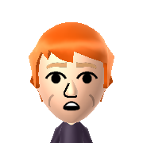

I am a first-year computer science student from Melbourne, Australia. The two most relevant things about me and why this page exists are below in dot-point form :)
My interests fluctuate a lot. I enjoy exploring systems programming and TCS very broadly. Right now, I'm interested in learning more about:
Outside of study, I love exploring with my friends, watching footy, and trying to learn new things. I'm also a pretty washed competitive speedcuber. Earlier in 2026, I officially became the second-fastest Australian to have solved a Pyraminx, setting a time of 0.97s at the Australian National Championship in Melbourne. This time is 0.01s (!) slower than Sebastian Lee's 0.96 national record, but I'm just happy to show that maybe I'm not entirely unc yet in the cubing community 🤷♂️. As of July 2026, I was ranked 31st in the world for Pyraminx single.
Most of my projects are open-sourced on GitHub. Any big projects I'm currently working on are listed below.
Rubik's Cube state inference from video footage of solves.
A statically typed, interpreted programming language implemented in Rust.
An online platform facilitating competitive head-to-head speedcubing using an ELO rating system.
Email: william [dot] herring [dot] au [at] gmail [dot] com
LinkedIn